Park City ski guides
Everything we have learned owning and skiing out of a villa in Canyons Village. Lifts, transfers, lift tickets, what a week really costs, and how to book the February weeks that sell out first.
Presidents' Week 2027
5 guides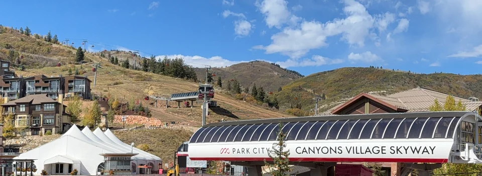
How Far Ahead to Book Park City Presidents' Week 2027
Presidents' Week 2027 runs 13 to 20 February. What goes first, and why the Epic Pass deadline in early December binds harder than the lodging does.
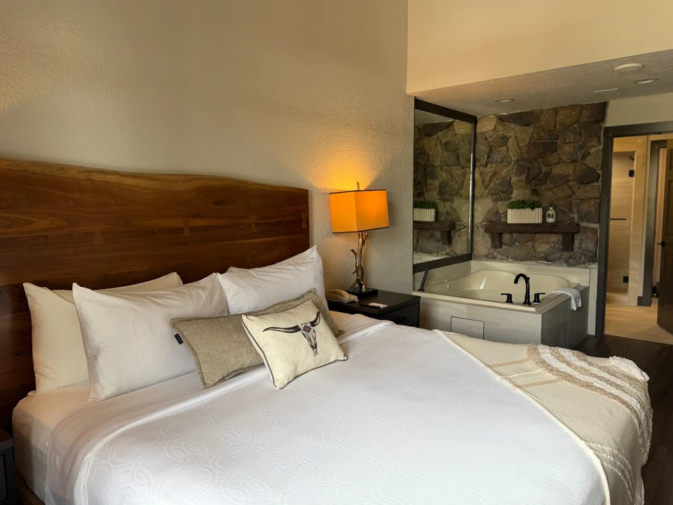
When to Book Park City for a Peak Week
For a mid-February stay, family-sized ski-in lodging goes between October and early January. What goes first, what waiting costs, and how to book safely.
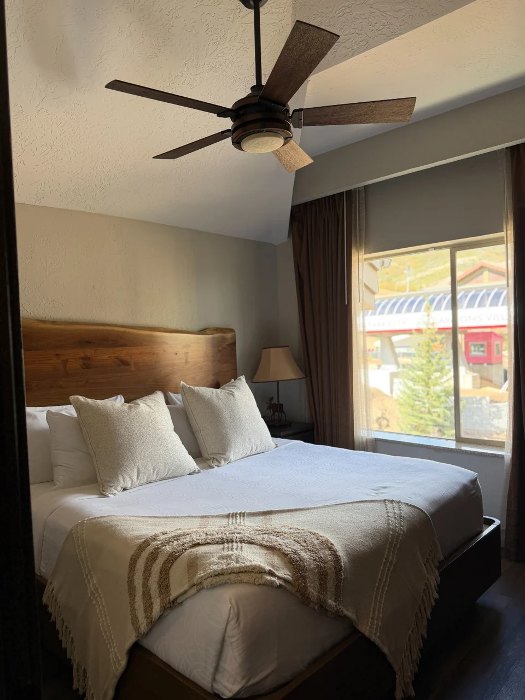
Canyons Village Ski-in Ski-out During Presidents' Week 2027
Presidents' Week 2027 in Park City runs 13 to 20 February. What ski-in ski-out means in Canyons Village, which lift you walk to, what a week costs, and when to book.
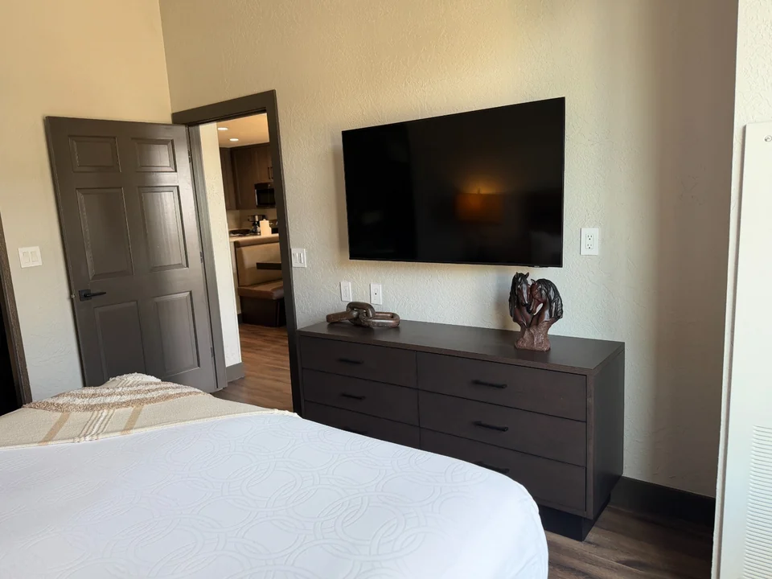
Why Presidents' Week Sells Out First in Park City
Presidents' Week is the hardest ski week of the year to book in Park City. School calendars, fixed lift capacity and a small supply of family-sized units explain why.
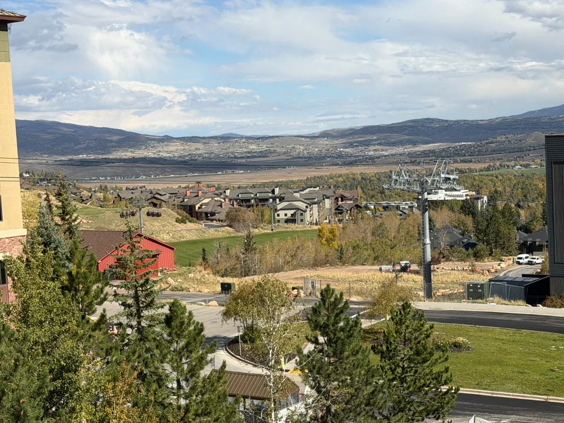
February Skiing in Park City: Snow, Crowds and How to Ski a Busy Week
February is usually the best snow month of the Park City season and also the busiest. What to expect from conditions, and the habits that make a holiday week work.
Opening the 2026-27 season
5 guides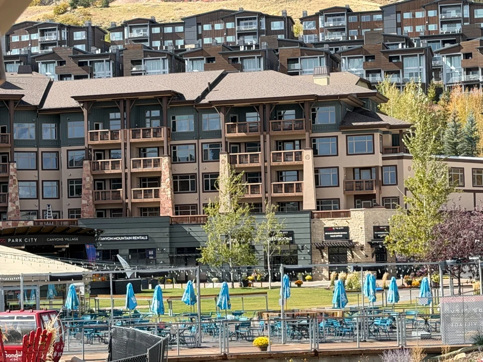
Park City Opening Day 2026: What Is Open on 25 November
Opening day moved to Wednesday 25 November after 38 inches of snow. Which nine lifts and six runs opened, and why six of them are on the Canyons side.
Early Season Skiing in Park City: What November Really Gives You
How much terrain actually opens in November, what thin cover does to the skiing, where the snowpack stands this season, and who should wait for a deeper base.
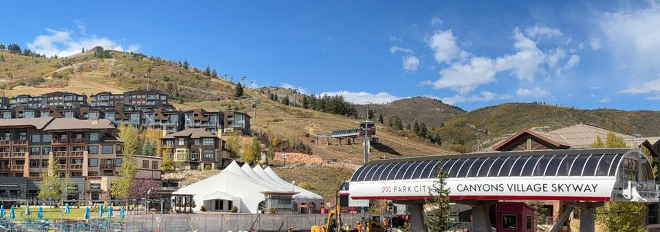
Canyons Village Opening Weekend 2026: What to Expect
The Farm does not open until 4 December. The parking garage is not open yet. Here is what is and is not open at Canyons Village on 25 November.
The Cabriolet Is Gone: Canyons Village Lift Guide 2026-27
Several guides still name the Cabriolet. It made its final run in March 2026. Here is what replaced it and what that changes for arriving at Canyons Village this season.
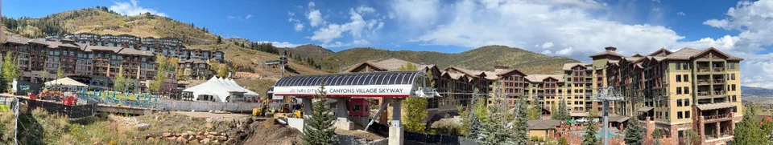
Deer Valley Opening Day 2026: What Opens on 5 December
Deer Valley opens ten days after Park City Mountain. The new Hail Peak terrain, the skiers-only rule, and why driving over from Canyons Village works.
Holiday skiing 2026-27
3 guidesChristmas in Park City 2026: What Is Still Bookable
Christmas week is largely gone. What the Epic Local blackout covers, where cancellations surface, and when to act for Presidents' Week instead.
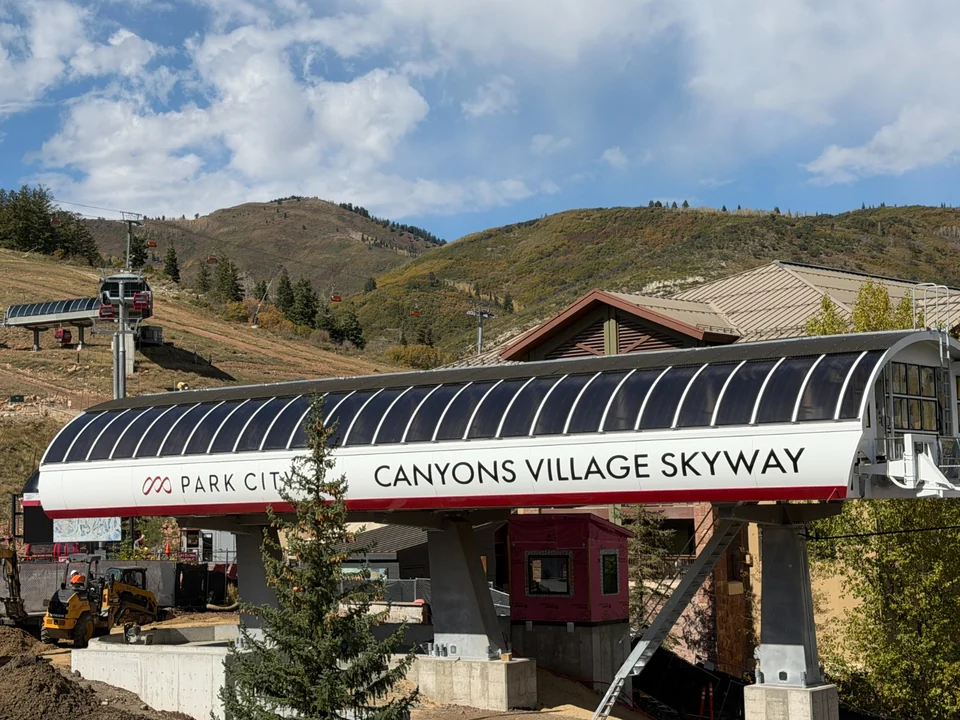
New Year in Park City 2027: What the Week Is Like
The busiest week of the season. NYE fireworks, lift queues, restaurant booking reality, and what changes after midnight on 1 January.
Park City Christmas and New Year for a Group of 24
Three two-bedroom villas at Canyons Village, eight guests each. Epic Local blackout dates, dining gaps and Utah's liquor store rules over the holiday week.
Park City events in 2027
5 guidesThe Snow League Comes to Park City in January 2027
The Snow League returns to Park City Mountain on 21 to 23 January 2027. Where the halfpipe sits, how to reach it, and where a group should stay.
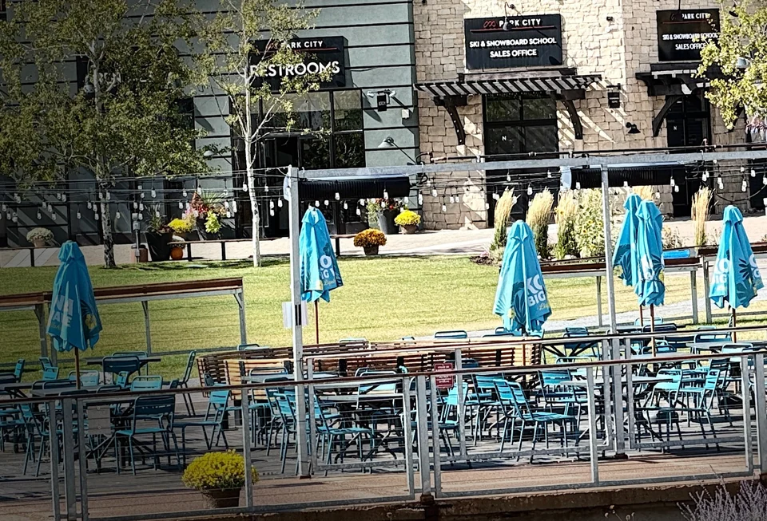
Park City Women's Weekend 2027: Three Days in Canyons Village
Park City Women's Weekend runs 5 to 7 March 2027 in Canyons Village. What the clinics involve, what else is on, and where a group of eight should stay.
The Deer Valley World Cup 2027: A Visitor's Guide
The Deer Valley World Cup 2027 runs 28 to 30 January, free to watch under the lights. The new Stifel name, the digital ticket rule and how to get there.
Park City January 2027 Events: The First January Without Sundance
Park City January 2027 events: the Snow League, the Deer Valley World Cup, and the first January in over forty years with no Sundance in town.
January 2027 in Park City: Quiet Weeks and Loud Ones
January 2027 opens quietly, then the Snow League and Deer Valley World Cup arrive back to back. How the month divides week by week.
Spring break 2027
3 guidesPark City Spring Break 2027: What Late March Skis Like
Spring break 2027 lands on an early Easter, 28 March. Why the snowpack is near its deepest that week, what is on in the village, and the honest catch.
March Skiing in Park City: What the Snow Actually Does
March skiing conditions in Park City: firm mornings, soft afternoons and a snowpack near its seasonal peak. How to read aspect and time a spring ski day.
Spring Break With Kids in Park City: Why Late March Works
Why late March suits young children better than Presidents' Week, the ski school rules that catch families out, and what an early Easter does to the crowds.
Canyons Village and the mountain
10 guides
Canyons Village or Deer Valley for a Family Week
Deer Valley is still skiers only for 2026-27. That one rule, the two pass systems and the daily drive decide a family week before anything else does.
The Canyons Village Lift Map, Read as a Plan for Your Ski Day
A Canyons Village lift map read as a plan for your day: which lift suits beginners, which keeps a mixed group together, and which brings you home at four.
Your First Morning at Canyons Village, Hour by Hour
Your first morning at Canyons Village, hour by hour: what to sort the night before, when to collect rentals, and when to leave for a 9:00 am first chair.
The Canyons Village Skyway Gondola: What Replaced the Cabriolet, and What It Changes
The Canyons Village Skyway gondola replaced the open-air Cabriolet for the 2026-27 season. What it does, what it does not do, and where it leaves you.
How Close Is Westgate Park City to the Lifts? Honest Walking Times in Ski Boots
How close is Westgate Park City to the lifts? Honest walking times to the Red Pine Gondola in ski boots, and what ski-in means at this building.
Deer Valley or Park City Mountain: Which to Ski
Two large resorts in the same town with different rules, different passes and a different feel. How to choose, and whether to ski both in one week.
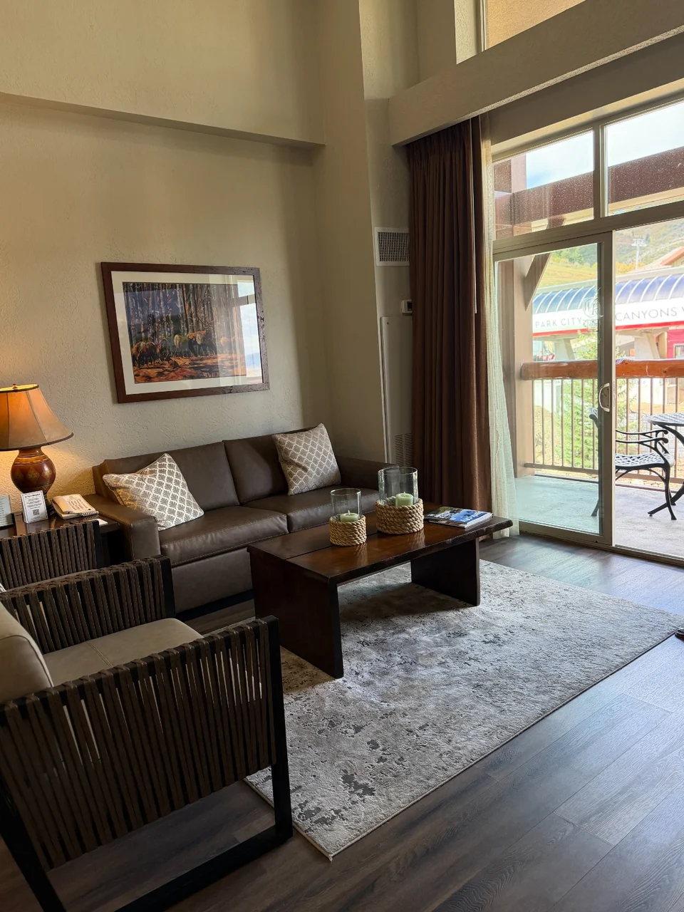
The Red Pine Gondola: The Lift Your Canyons Village Week Runs On
The Red Pine Gondola is the main way out of Canyons Village and up the mountain. What it connects to, when it queues, and the lifts around it.
Park City Mountain Resort by the Numbers, and What They Mean on Snow
7,300 acres, 330 plus trails and 41 lifts make Park City the largest ski resort in the United States. What that scale actually changes about how you ski it.
What Ski-in Ski-out Actually Means in Park City
Ski-in ski-out is not a regulated term. In Park City it covers everything from a door onto a run to a ten minute walk across a car park. Four questions that settle it.
Canyons Village or the Park City Base: Which Side to Stay On
Park City Mountain Resort has two base areas about ten minutes apart. One is a purpose-built ski village, the other is the bottom of a historic Main Street. Here is how to pick.
Getting there and getting around
2 guidesSalt Lake City Airport to Park City: Every Way to Make the Transfer
Canyons Village is about 33 miles from Salt Lake City International, roughly 40 to 45 minutes. Shuttles, private transfers, rental cars and what winter does to the drive.
Do You Need a Car in Park City?
If you stay in Canyons Village and ski the mountain, you can walk to the lift all week. When a car earns its keep, and when it is a parking problem you paid for.
What it costs
8 guides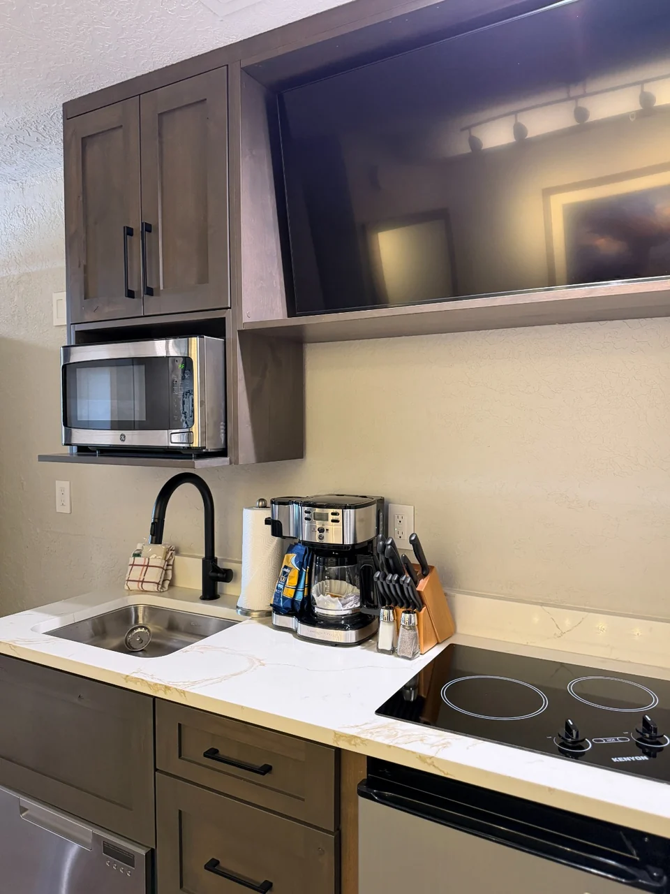
What a Park City Ski Week Actually Costs for a Family of Eight
Lodging, lift tickets, rentals, transfers, food and fees. The lines that make up a seven night Park City trip, and the two that people leave out.
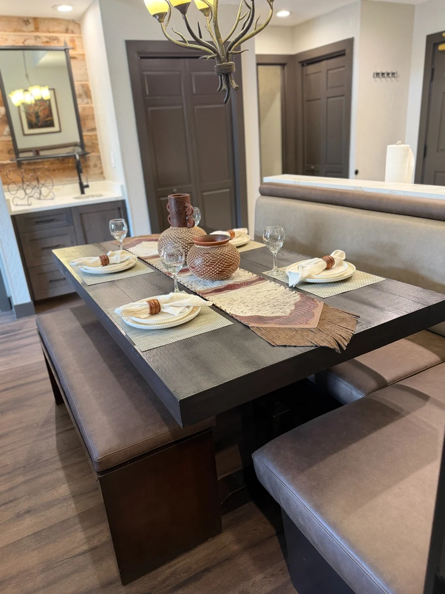
Resort Fees and the Costs That Appear at Checkout
Nightly resort fees, village assessments, cleaning and parking are normal in Park City and easy to miss. How to find them before you book rather than after.
Ski and Snowboard Rentals in Canyons Village
Renting in the village, booking ahead, delivery services and why ski storage at the base matters more than the daily rate.
Park City Lift Tickets and the Epic Pass: Doing the Maths
Lift tickets are the largest cost after lodging. Why buying at the window is the expensive way, and when a season pass is cheaper than a week of day tickets.
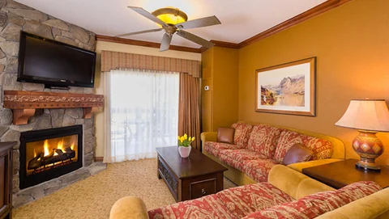
Ski In Ski Out Park City: What It Actually Costs in 2027
A per-component breakdown of what a slopeside ski week at Canyons Village costs in 2026-27 — accommodation, lift tickets and rentals in one place.
Park City Lift Tickets 2026-27: What a Week Really Costs
Epic Pass, Epic Local and Epic Day Pass prices with the date we checked them, the real break-even count, and the 6 December deadline that closes it all.
Park City Lift Tickets Early: The Advance-Purchase Trade
Park City Mountain saves you up to $100 per ticket if you buy 4+ weeks out. When that advance bet pays and when it does not.
What a Canyons Village Ski Week Costs in 2027, Line by Line
Lift tickets, rentals, transfers, groceries, resort fees and parking. The seven cost lines of a ski week at Canyons Village, and the two that rarely appear in the headline rate.
Families and groups
5 guides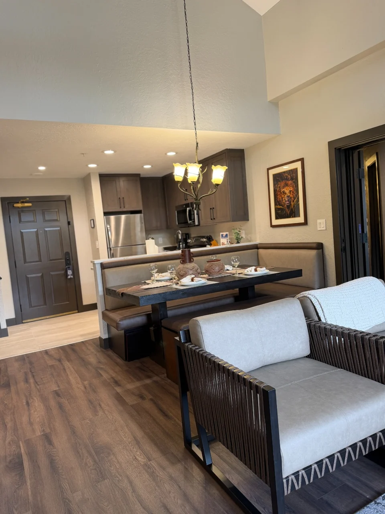
A Two-Bedroom Villa or Two Hotel Rooms: The Honest Comparison
For a group of six to eight, one villa and two hotel rooms often look similar per night. They are not similar once you count meals, mornings and evenings.
Park City with Kids: Ski School, Childcare and the Logistics That Decide the Week
Booking ski school early, the morning routine that actually works, and why the walk to the lift matters more than anything else when the group includes small children.

Renting Park City Villas for a Large Group of up to 24
Three two-bedroom villas in one resort, eight guests each. How a group of 24 divides, how meals work across three kitchens, and where that many people eat out.

A Multi-Family Ski Trip: How Two Families Share One Villa
Two families in one two-bedroom villa works on the floor plan, not the rate. The two front doors, who takes which side, and four ways to split the cost.

Group Logistics for Three Park City Villas: What to Sort, and When
Seats are not ski bags, a 10am check-out is not a plan, and 24 guests fall between a normal booking and a private event. The jobs in the order they bite.
Staying at Westgate
5 guides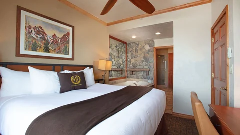
Westgate Park City Resort: What Is Actually On Site
Pools, spa, ski rentals, restaurants, childcare and a gym, all inside Canyons Village at the base of the Red Pine Gondola. What that changes about a ski week.
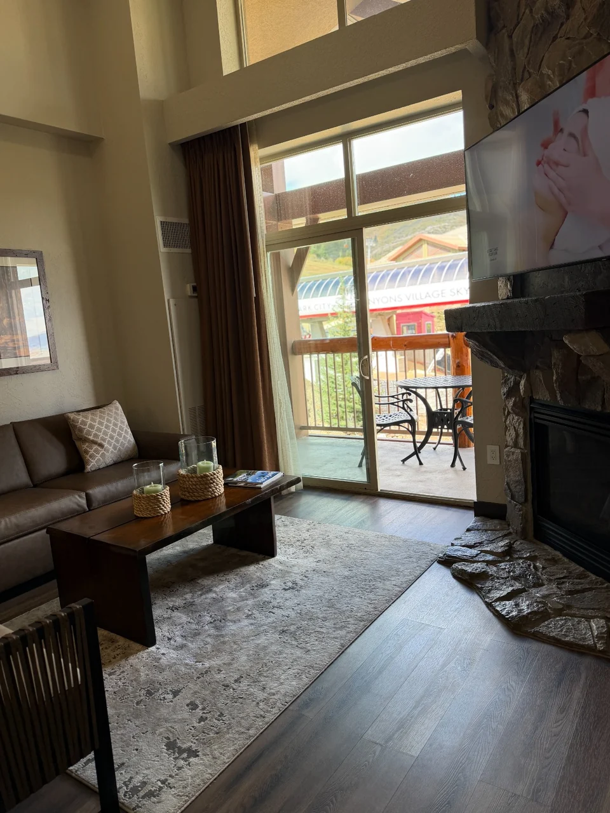
Booking a Westgate Park City Villa Direct from the Owner
Most Westgate units are rented out by individual owners rather than the resort. What that means for price, what to ask, and how to tell a good listing from a vague one.
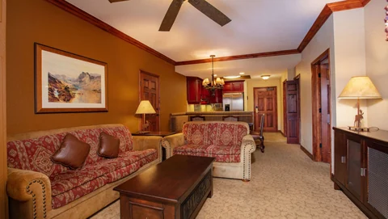
What Is Inside a Westgate Park City Two-Bedroom Villa
1,100 square feet, two kings, two living rooms and the lock-off design. A room-by-room look at what the Westgate two-bedroom villa actually contains.

Renting a Park City Villa Direct from the Owner, or Through an Agency
What changes when you rent direct rather than through a management agency. Fees, communication and flexibility compared.
What to Look For in a Park City Villa That Sleeps Eight
A pre-booking checklist covering what to verify about beds, bathrooms, kitchen and ski storage before confirming a Park City villa for a group of eight.
Food and off the mountain
6 guidesAprès Ski in Canyons Village, Honestly
Canyons Village is not a nightlife destination and does not pretend to be. What the afternoons and evenings are actually like, and where to go when you want more.
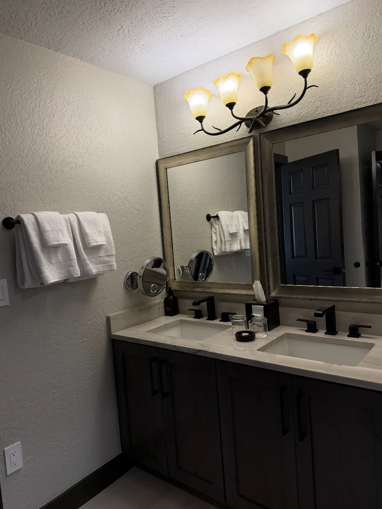
Park City for Non-Skiers and Days Off the Mountain
Every ski week produces at least one day when somebody is not skiing. Spa, pools, town, tubing and what to plan for before it happens.
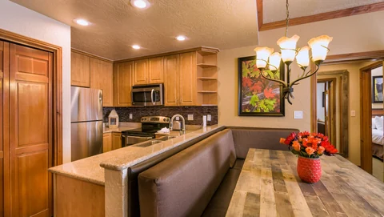
Where to Eat in Canyons Village Without Driving Anywhere
Canyons Village covers the two evenings that matter: a proper dinner out and a casual one nobody has to dress for. What to book ahead during a peak week.
Park City Main Street: Getting There and What It Is For
Main Street is about ten minutes from Canyons Village and worth one or two evenings of a ski week. How to get there, when to go, and what it is actually good at.
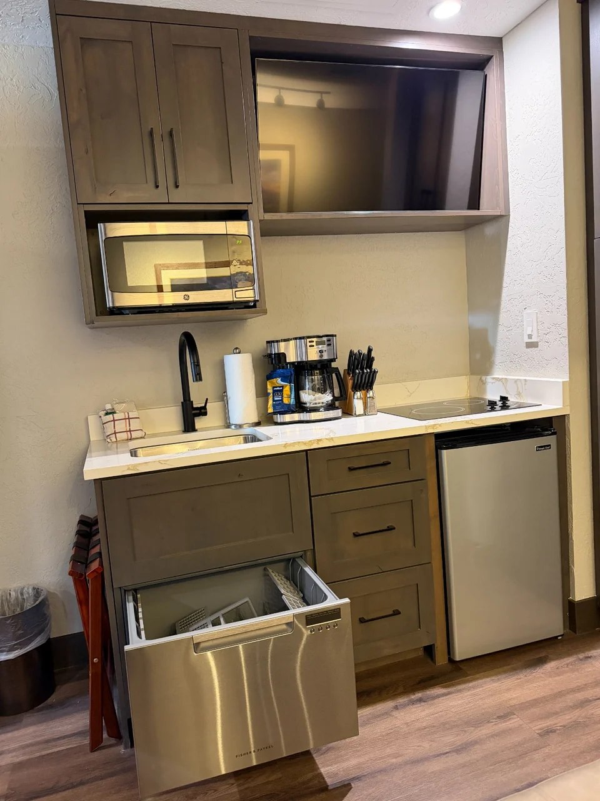
Why a Full Kitchen Changes a Ski Week
Feeding eight people for seven days is one of the largest costs of a ski trip and the easiest to change. What a real kitchen does beyond the budget.
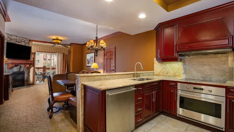
Grocery Shopping for a Park City Ski Week
Do the big shop on the way in from the airport, not after you arrive. What to buy, what the resort marketplace is for, and what delivery solves.
Before you go
3 guidesThe Park City Ski Season: How the Months Differ
Park City runs roughly late November to mid April. What each part of the season offers, which weeks are busiest, and when to go for snow against crowds.
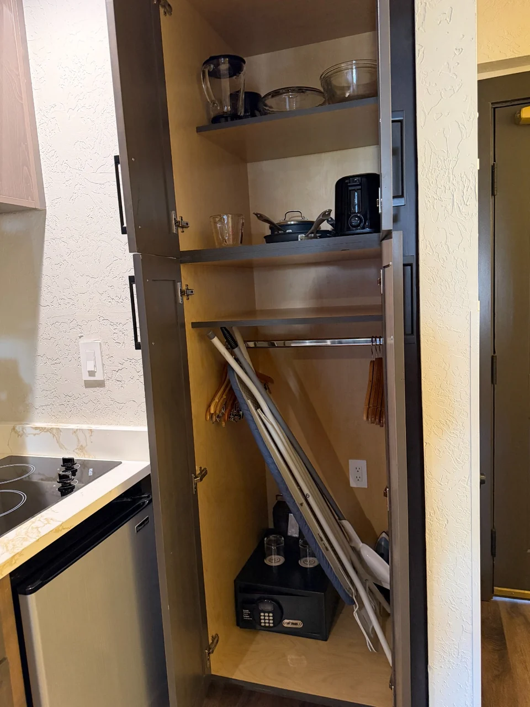
Packing for a Week in Park City
What to bring, what to rent, and what laundry in the unit lets you leave at home. The items that actually decide whether day four goes well.
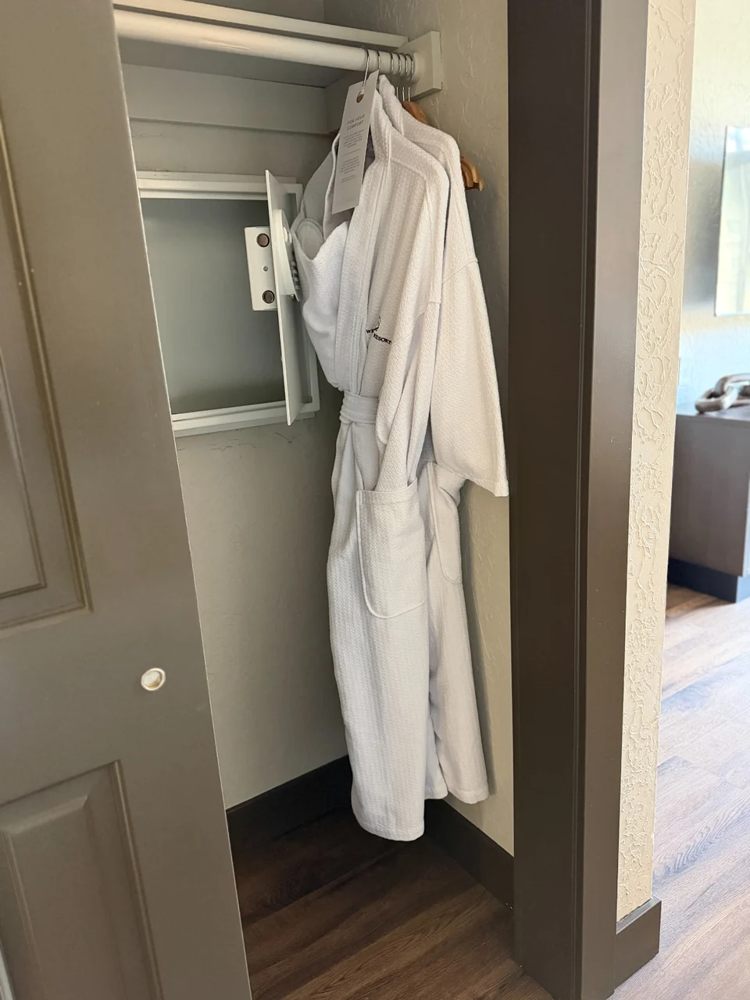
Altitude in Park City: Why the First Day Feels Harder
The base sits near 7,000 feet and the lifts go well above 9,000. What that does to visitors arriving from sea level, and how to make day one easier.
The villa behind these guides
A Premier Two-Bedroom Villa inside Westgate Park City Resort in Canyons Village. 1,100 square feet, sleeps eight, full kitchen, two bathrooms, a short walk to the Red Pine Gondola. Available for Presidents' Week 2027, 13 to 20 February.